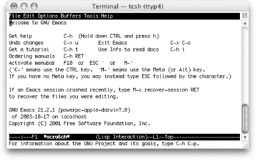
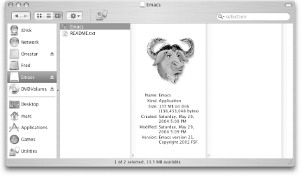

|
|
< Day Day Up > |
|
13.2. Emacs and Mac OS XAs you may have picked up reading other parts of this book, we treat Mac OS X as a Unix variant for many tasks. We do that with good reason, of course. Mac OS X is based on Unix. For example, you could more or less follow the CVS and Unix build instructions in the previous sections and come away with a full installation of Emacs.[3] However, as you know, Mac OS X can be a little different in some ways; it doesn't have all the Unix utilities by default (see the section on installing Ispell for one example of this). This section covers installing Emacs on Mac OS X as well as other issues such as running Emacs from the command line, changing the location of your Meta key, and installing Ispell. And if you do want to build Emacs from scratch using CVS, we have a few notes on that, too.
13.2.1 "But I Already Have Emacs"Mac OS X comes with a version of Emacs installed: 21.2.1 with Panther (10.3.2) and 21.1.1 with Jaguar (10.2.8). To start this version, use the Terminal application in your Utilities folder (which is inside the Applications folder) and just type emacs. Figure 13-3 shows the built-in Emacs running in the Terminal application. Figure 13-3. The Terminal-based Emacs built into Mac OS XBut you should be aware that although it is built-in and certainly the easiest to start using, this version of Emacs has a few shortcomings:
If you can live with those restrictions—or have no choice—then feel free to skip the next section on installing Emacs and get on with using the version you have. The vast majority of information in this book still applies. 13.2.2 Installing Prebuilt Emacs on Mac OS XWhat if you want the latest version of Emacs but don't want to build it yourself? After all, not every Mac OS X user is an old Unix hack! Mac systems made a name for themselves by providing some of the best user interface conventions around in a single, good-looking package. That hasn't changed. If you're not a big fan of do-it-yourself application building, you can download a nifty application bundle and just drag-and-drop your way to a recent build of Emacs. 13.2.2.1 Downloading Alex Rice's application bundle of Emacs 21.3.5Most Mac users will want to grab a prebuilt binary version of Emacs that's all ready to go. Alex Rice created just such a build. It can be found online (for free![4]) at: http://mindlube.com/products/emacs/index.html. You can download directly from that page, but be sure to grab the correct version. You can pick from the Jaguar (Mac OS X 10.2) version or the Panther (Mac OS X 10.3) version.
You'll be downloading a .dmg file which is the Mac disk image format. It should automatically unpack and mount itself, but if it doesn't for some reason, just double-click on the .dmg file after it is completely downloaded. As it launches, you'll need to read and agree to the license. After you do that, you should have a new "disk" mounted and you'll see the Emacs application all ready to drag and drop. (See Figure 13-4.) Figure 13-4. The mounted disk image for Emacs on Mac OS X (Panther)Drag the big gnu to your Applications folder and off you go. That really is all there is to it. Many, many thanks to Alex Rice and Mindlube! (And feel free to eject the mounted image once you have copied Emacs to your hard drive.) 13.2.3 Building Emacs from Source on Mac OS XWhile Mac OS X is based (very squarely) on Unix, as of build 21.3.5, your best bet for building Emacs is still to go with a slightly modified build process. (The Mac build should join up with the normal build in version 21.4.) Until 2004, that separate process was maintained by Andrew Choi and made available to the public at http://members.shaw.ca/akochoi-emacs/. Fortunately, it is still available there, although Andrew is no longer the Mac maintainer.
13.2.3.1 Before you buildFor the 21.3 build, Andrew Choi has posted the steps required to retrieve and build Emacs at http://members.shaw.ca/akochoi-emacs/stories/obtaining-and-building.html. If you plan to go this route on Panther (Mac OS X 10.3), just follow Andrew's instructions. Alternatively, you can follow the Unix build instructions from the previous section. If you're still running Jaguar, you'll need to do a bit of preparatory work. Read on. 13.2.3.1.1 Jaguar (Mac OS X 10.2) preparationThe first of the extra notes is that you should upgrade to Panther (10.3) if you aren't there already. Seriously. There are lots of benefits. But if that's just not in the cards for you, you do need to take a small detour before installing Emacs. Mac OS X 10.2 lacks a piece of software required for Emacs: texinfo. (That tool comes preinstalled on 10.3.) It's not hard to install; you just have to remember to do it. You basically install the texinfo package as you would if any other Unix package. You can look back at the previous section for more details, but here are the basics. You'll need to perform these commands from the Terminal application. By default, Terminal starts you out with a C-Shell variant, so we'll use the % character for the prompt in the commands for this section.
You'll be prompted for your password. Type it in and everything should go well. If you aren't allowed to administer your own machine, you'll need the help of someone who does have admin privileges. Now that you've installed texinfo, you'll need to download, unpack, and install Emacs, either by following Andrew Choi's instructions or ours in the "Emacs and Unix" section earlier in this chapter. Your Mac build should end up creating a double-clickable icon that you can drag and drop into your Applications folder just like the prebuilt download. 13.2.4 Starting Emacs from the Command Line on Mac OS XOn Mac OS X, you have Emacs preinstalled, but as we know, it is an older version of Emacs. Let's say that you have installed the graphical version and want to start it with some command-line arguments. For example, you might want to run emacs —debug-init to debug your .emacs file. The Mac OS X Gnu icon certainly should be a permanent fixture on your Dock, but at times the command line is the way to go. We learned this trick from Andrew Choi's Mac OS X FAQ, and we share it here, slightly tweaked, for convenience. Check out his page at http://members.shaw.ca/akochoi-emacs/stories/faq.html. Essentially, you replace the binary that comes with Mac OS X with a shell script that runs the new version of Emacs you installed. You might want to simply rename the old binary so that you can on occasion use it instead. Here's the procedure.
13.2.5 Mac OS X and the Meta KeyThis book has mentioned using the Command key for Meta on Mac OS X. By default, the Command key (sometimes called the Open Apple key, or more simply xxxMacSymxxx) is Meta. But in fact you have a choice. The variable mac-command-key-is-meta can be used to select which key you want to use. As the variable name implies, setting mac-command-key-is-meta to t means that you use xxxMacSymxxx as the Meta key. So you can type the M-x combination as xxxMacSymxxxx. The alternative (setting mac-command-key-is-meta to nil) sets the Option (or Alt) key to be your Meta key. You might do this if you want to continue using the Command key for Mac functions or if you find that Option is simply easier to reach. Of course, it's not quite that simple. Emacs still traps the Command key. That trapping is supposed to be turned off with one more variable: mac-pass-command-to-system, but to be honest, we never got that to work. 13.2.6 Installing IspellAs mentioned in Chapter 3, Emacs uses Ispell for its spell-checking functionality. However, despite voluminous hooks to it, the Ispell executable is not part of Emacs and is not installed by default on Mac OS X. You must therefore install Ispell to get spell-checking to work properly. We took the easy path to doing this: downloading and installing Fink (see http://fink.sourceforge.net for instructions). Fink is an all-purpose Mac OS X installer that enables you to install Unix software on your Mac easily. After installing Fink, installing Ispell was completely painless: % fink install ispell Just one further step is required so that Emacs finds Ispell without tweaking. Create a symbolic link between the location where Fink installs Ispell (/sw/bin/ispell) and where Emacs expects Ispell to be (/usr/bin/ispell).[6]
% sudo ln -s /sw/bin/ispell /usr/bin/ispell Voilà. Emacs spell-checking with Ispell now works as described in Chapter 3. |
|
|
< Day Day Up > |
|